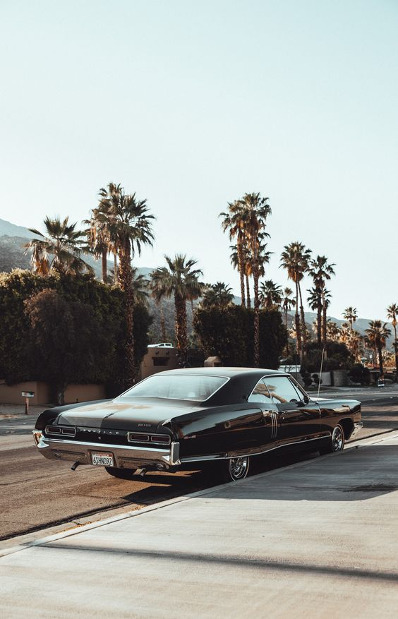

Sewar Elamor

Summary
I am a hardworking person, I am always eager to discover new dimensions in my field, with experience in biology.
Education
B.Sc in biology - Achva Academic College (2017-2021)
Work Experience
- Lab Employee - Soroka Medical Center
- Coordinator of a scholarship for academic students - Perach
- Chemistry Practitioner - Achva Academic College
Skills
- Project administration
- Basic computer skills
- Trilingual - (Arabic, Hebrew, English)
Awards and Certificates
- 2023 Employee Of The Year - SMC
- Best biology research of the yaer - Achva Academic College 2021
- Mentor of the year - Perah 2019
More about me
- I have a little experience in marketing
- I am a master in the art of crochet
- I like to cook, homemade food is the best
Contact Me